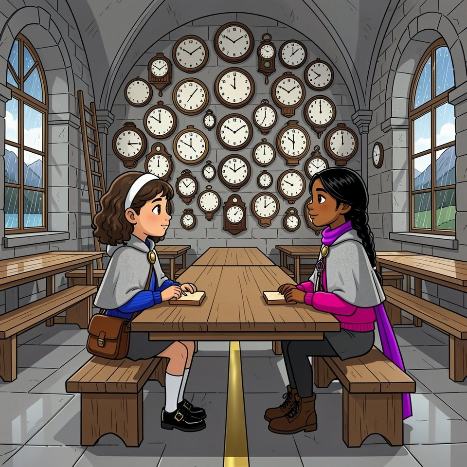

Titistoire › Les Galaxies (8-10 ans)
Le couloir des jours impairs
Haute-Lanterne, épisode 2 sur 8 : un feuilleton à énigmes dans un vieux château-phare au milieu d'un lac.

▶ Écouter et regarder l'histoire
Gratuit, sans inscription : la voix lit, le texte suit mot à mot, les images tournent comme dans un album.
Le texte de l'histoire
Depuis la veille au soir, Nour savait une chose que personne d'autre ne savait à Haute-Lanterne. Là-haut, au Perchoir, les Levants gardaient une moitié de vieille carte, au bord découpé de sept dents. En bas, à la Tanière, les Couchants en cachaient une autre, au bord creusé de sept creux. Et Nour avait juré de n'en parler à personne.
Ce matin du dix-huit, il tombait une pluie fine dont personne ne se plaignait. Dans la salle des Horloges, la pendule dorée sonna l'heure du thé, et le thé arriva, avec le pain grillé et la marmelade. Nour s'assit du côté du Couchant, sans écharpe. Kenza la surveillait par-dessus sa tasse.
Nour beurra son pain très lentement. Parler ? Elle avait juré. Mentir ? Les lanternes le lui défendaient. Restait à se taire, et ce silence-là pesait plus lourd que sa valise. À moins de poser une question. Poser une question, ce n'est pas parler d'un secret. Surtout si elle porte sur tout autre chose, et qu'on la pose au bon endroit.
Le bon endroit, elle le connaissait. Il y avait à Haute-Lanterne un banc coupé en deux, où un Couchant dormait toute la journée, et autour duquel un Levant passait son temps à prendre des mesures. Nour finit son thé, remercia la théière par habitude, et sortit sous la pluie.
À midi, le banc du Trait était trempé. Sami y dormait quand même, en travers, sous un grand parapluie noir. Tom mesurait la flaque. « Onze centimètres chez nous, neuf chez eux. On gagne. » Nour vint s'asseoir tout au bout, côté Couchant, bien droite, et ouvrit son propre parapluie.
« Tom, puis-je te poser une question ? — Je ne te parle pas. C'est la règle numéro un d'Elias. Je réponds, c'est tout. — Tu comptes vraiment tout ? — Tout. — Même les dents de votre vieux parchemin ? — Sept. J'ai compté. Tu étais là. » Nour remercia. Puis elle regarda tomber la pluie, très fort, et n'ajouta plus un mot.
Sous le parapluie noir, quelque chose remua. « Sept, marmonna Sami sans ouvrir les yeux. Comme les creux. » Tom lâcha son mètre. « Quels creux ? » Alors il arriva une chose que nul n'avait jamais vue à Haute-Lanterne : Sami ouvrit les deux yeux en même temps.
« Aucun creux. Je dors. Tadam. » Mais Tom n'écoutait plus. Il comptait sur ses doigts. Sept dents d'un côté. Sept creux de l'autre. Des dents, il faut bien que cela entre quelque part. « Il y a une autre moitié, souffla-t-il. Et elle est chez vous. »
Sami regarda Nour. Nour regardait la pluie, avec une politesse parfaite. « Je n'ai parlé de rien, constata-t-il. J'ai dit sept. — Tu as dit creux », corrigea Tom. Et il partit en courant sous l'averse, sans parapluie, vers l'aile du Levant. Tom n'avait jamais su garder une chose pour lui. Nour comptait là-dessus.
Elias écouta, le crayon en l'air. Depuis des années, il rêvait de battre Kenza, une fois, une seule. Il descendit du Perchoir sans toucher la moitié des marches, entra dans la salle des Horloges et se planta au bord du Trait. « Règle numéro un : quand on a une moitié de carte, on le dit. Nous savons que vous avez l'autre. »
Kenza posa sa tasse. Elle ne regarda pas Elias. Elle regarda Sami, puis Nour, d'un regard à faire bouillir la théière. « Voilà la pire trahison depuis trois cents ans. Qui a parlé ? » Elle décrocha une lanterne du mur, l'alluma d'un « Je suis furieuse » qui ne laissait aucun doute, et la posa devant Nour.
« Je n'en ai parlé à personne », déclara Nour. La flamme ne bougea pas. C'était vrai, mot pour mot. Kenza poussa la lanterne devant Sami. « Moi non plus. J'ai dit sept. Sept, ce n'est pas un secret, c'est un nombre. » La flamme ne bougea pas davantage. On aurait même juré qu'elle s'amusait.
« De toute façon, reprit Elias, notre moitié est la vraie. — La vôtre désigne des porteurs de cruche. La nôtre est sous clé. — Ça se mesure, intervint Tom. Sept dents, sept creux : on pose l'une contre l'autre, et on regarde. » En trois cents ans, personne n'y avait songé. C'était pourtant simple comme un mètre pliant.
Restait à savoir où. « Au Perchoir, proposa Elias. — Aucun Couchant ne monte au Perchoir. À la Tanière. — Aucun Levant ne descend à la Tanière. » Le banc du Trait était trempé, la salle des Horloges pleine d'oreilles. Il fallait un endroit qui ne soit à personne.
« Il en existe un, glissa Nour. Tom me l'a montré hier. » Le couloir des jours impairs n'appartenait à aucune aile. Tous les six montèrent à l'étage. Au bout du palier, là où s'ouvrait la veille une porte de bois, il y avait un mur. Tom y posa la main, puis l'oreille. « Plein. Nous sommes le dix-huit. »
« Demain, donc », trancha Kenza. On rédigea un traité, sur une page du carnet d'Elias. Article un : chacun apporte sa moitié. Article deux : chacun tient la sienne, et ne la lâche pas. Article trois, exigé par Sami : on a le droit de s'asseoir. Elias voulut numéroter les articles un, un et un. Kenza refusa de signer.
On signa quand même, de part et d'autre d'un trait qu'Elias avait tiré au milieu de la page. Rendez-vous le dix-neuf, après le thé du soir. Cette nuit-là, à la Tanière, Kenza ne souhaita pas bonne nuit à Nour. Sa vérité du soir fut : « Quelqu'un, ici, est trop poli pour être honnête. » La lanterne s'alluma très bien.
Le dix-neuf, la porte de bois était revenue, et le couloir derrière elle, tendu de bleu, avec son tapis rouge et ses petites fenêtres rondes. Les Levants entrèrent par un bout, les Couchants par l'autre. Maya tenait une lanterne, allumée d'un « J'ai un peu peur et j'adore ça ». On se rejoignit au milieu. Sami s'assit aussitôt : article trois.
Kenza tira de son étui le parchemin du Couchant. Le petit ponton y attendait, lanterne éteinte. Elias déroula celui du Levant, et la barque d'encre fila se cogner au bord découpé. On posa les deux moitiés sur le tapis, à un pas l'une de l'autre. Sept creux à gauche. Sept dents à droite.
Personne ne bougea. Pousser le premier, c'était céder. « Ensemble, suggéra Nour. — Le Levant ne fait rien ensemble avec le Couchant. — Pour une fois, il a raison », reconnut Kenza. Tom soupira. « Je compte jusqu'à trois. À trois, chacun pousse la sienne. Ce n'est pas ensemble. C'est en même temps. » Cela leur parut acceptable.
« Un. Deux. Trois. » Les deux parchemins glissèrent. Les sept dents entrèrent dans les sept creux, sans un jour, comme si on les avait découpées la veille. Pendant un instant, rien ne se passa. Puis la barque d'encre, qui poussait contre son bord depuis si longtemps, ne trouva plus de bord.
Elle passa. Elle franchit la découpe, glissa sur l'eau dessinée de l'autre moitié et vint se ranger contre le petit ponton, tout doucement, comme la Luciole de Zora. Sur le ponton, la lanterne d'encre s'alluma : un point d'or, pas plus gros qu'une tête d'épingle. « Tadam », souffla Sami. Pour une fois, c'était le mot juste.
Alors toute la carte se mit à bouger. Le lac rétrécit, les rives s'effacèrent, les traits coururent d'une moitié sur l'autre et se nouèrent au milieu. La tour grandit jusqu'à remplir la feuille, ouverte comme une pomme coupée. Et, entre les deux ailes, l'encre dessina une chambre que personne ne connaissait.
C'était une petite chambre ronde, à deux fenêtres : l'une vers le levant, l'autre vers le couchant. Au milieu, une table, et deux personnages pas plus hauts qu'un ongle, assis dos à dos. « Imagine : ils boudent, murmura Maya. — Elle est de quelle aile, cette chambre ? demanda Elias. — Elle a deux fenêtres », répondit Tom, et nul ne sut que dire.
Autour de la chambre, l'encre traça encore quatre petits signes, l'un après l'autre. Une horloge qui n'avait qu'une aiguille. Un livre fermé par deux sangles. Une porte, entre deux portes toutes pareilles. Une flamme. Puis plus rien ne bougea, sauf la barque, qui se balançait contre son ponton.
« Le trésor des fondateurs est dans cette chambre, déclara Kenza. Le Couchant le répète depuis trois cents ans. — Le Levant vient de le trouver, corrigea Elias. — Avec notre moitié. — Sur notre tapis. — Ce tapis n'est à personne », rappela Nour, très poliment.
Ils discutèrent longtemps. À qui, la carte entière ? Qui la garderait ? Elias proposa un jour sur deux, et les jours impairs pour le Levant. Kenza fit observer que le Levant se servait bien. Maya imagina tout haut un coffre à deux clés. Sami dormait à cheval sur la découpe. Les trois Levants, qui se couchaient tôt, bâillaient chacun à leur tour et tenaient bon, par fierté.
Tom, lui, n'écoutait pas. Il comptait autre chose. Quelque part dans la tour, une cloche sonnait, et il en était à neuf. Dix. Onze. « Minuit, annonça-t-il. Après minuit, nous serons le vingt. » Ils se regardèrent, tous les cinq. Le vingt était un jour pair.
« Et si l'on est dedans à minuit ? » avait demandé Nour, le premier matin. Elle n'eut pas le temps de se rappeler la réponse. La cloche sonna son douzième coup. Les petites fenêtres rondes pâlirent. Le bleu des murs devint gris, puis blanc. Le tapis rouge s'en alla sous eux, sans bruit, comme une eau qui se retire.
Tom ouvrit les yeux dans son lit, au Perchoir. Elias était dans le sien, Maya dans le sien. Tous trois regardèrent leurs pieds. Ils étaient en chaussettes. « Sans ses chaussures, articula Maya d'une toute petite voix. Je l'avais inventé. Je croyais que je l'avais inventé. »
Au mur, le vieux parchemin avait repris sa place, pendu à son clou. Elias le décrocha. La moitié de tour y était, et la moitié de chambre. Mais sur l'eau dessinée, il n'y avait plus rien. « Notre barque ! Ils nous l'ont volée ! — Plus de barque, plus de corvée de cruche », observa Tom, qui voyait le bon côté des choses.
Tout en bas, à la Tanière, Kenza ouvrait son coffre, en chaussettes elle aussi. Le parchemin du Couchant dormait dans son étui. Elle le déroula. La barque d'encre était là, amarrée au petit ponton, sous la lanterne allumée. Kenza la contempla longtemps. « Elle est venue toute seule. Qu'ils viennent la chercher. »
À l'étage, il n'y avait plus qu'un mur. Au pied de ce mur, douze chaussures attendaient, rangées par paires. Zora les trouva à l'aube, en faisant sa ronde. Elle les ramassa, les cira, et les reposa devant trois lits du Levant et trois lits du Couchant, sans poser une seule question.
Cinq élèves ne se rendormirent pas, cette nuit-là ; le sixième était Sami. Chacun revoyait la chambre aux deux fenêtres, et les quatre signes. Le premier, tous l'avaient reconnu : une horloge à une seule aiguille, il n'y en avait qu'une au château. Mais de quoi donnait-elle l'heure ? Dans la salle des Horloges, justement, l'horloge de personne avait avancé d'un cran. Il en restait douze.
Épisode suivant : Quatre-vingt-dix-sept horloges